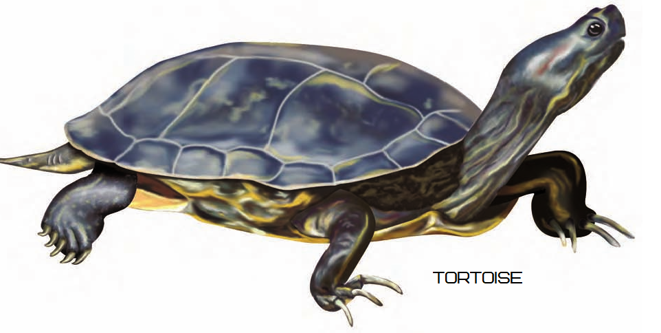
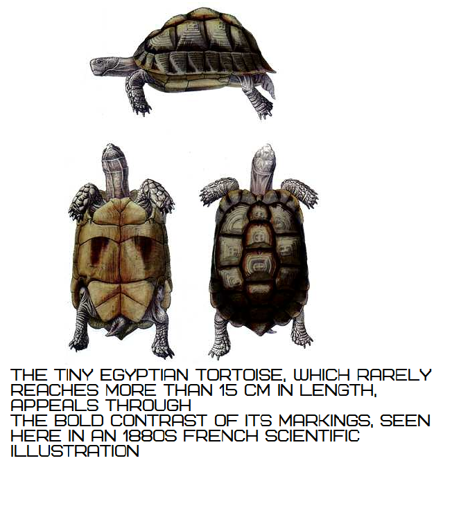

What is the main difference between Turtle and Tortoise? Is it Turtle or Tortoise?
The main difference between Turtle and Tortoise is A turtle's shell is lightweight, so the animal can swim fast whereas A tortoise's shell is also covered in scutes. But the shell is large and heavy. Most tortoise shells are high and rounded. |
Turtles and tortoises are in the reptile family, which means that they are ectothermic, or cold-blooded. Cold-blooded animals rely on external heat sources, such as warm ground, hot rocks, or sunshine, to warm their bodies. Turtles are the original sun worshippers and can often be found sleeping on rocks or logs, soaking up the sun's rays.
Bhagavad Gita cites the tortoise as an example of meditation for elevation to Krishna consciousness.
Difference Between Table for Turtle and Tortoise(Turtle vs Tortoise in table)
| Basis | Turtle | Tortoise |
| Habitat | Turtles spend much of their time in water. | Tortoise live on land. |
| Home | Most turtles make their homes in hot, wet areas. But some of them live in cooler climates. | Tortoise's make their homes in dry areas. |
| Lives on | Turtles live everywhere around the world except Antarctica. | Tortoise are found everywhere around the world, except Australia and Antarctica. |
| Makes Home On | Most turtles make their homes in hot, wet areas. | Tortoises make their homes in dry areas. |
| Movement | Most Turtles swim. | A tortoise travels on land. |
| Feet For Movement | Most of Turtles have webbed feet to help push their bodies through water. But a sea turtle's front legs are flippers. The flippers allow the turtle to cruise through the water. | Tortoise's legs are thick and strong. A tortoise's feet look like elephant feet. The animal uses its feet to walk on or dig into the dirt. |
| Shell | A turtle's shell is lightweight, so the animal can swim fast. The shell is covered in large scales called scutes. Some shells are flat. Others are curved. | A tortoise's shell is also covered in scutes. But the shell is large and heavy. Most tortoise shells are high and rounded. |
| Classification | Turtles are both aquatic and terrestrial. | Tortoises are terrestrial only. |
Tortoiseüê¢
Tortoise live on land. They make their homes in dry areas. These animals are found everywhere around the world, except Australia and Atarctica. A tortoise travels on land. It has to raise its heavy body and shell off the ground. Its back legs are thick and strong. A tortoise's feet look like elephant feet. The animal uses its feet to walk on or dig into the dirt. A tortoise's shell is also covered in scutes. But the shell is large and heavy. Most tortoise shells are high and rounded.
Tortoises are Poikilotherms
Tortoises live in warm climates, and they are native to all continents except Australia and Antarctica. Being cold-blooded, or more correctly poikilotherms, they depend on their surroundings to maintain body temperature, seeking warmth when cold and avoiding it if in danger of overheating.
Are tortoises mute?
Tortoises are basically mute, except for males squealing with delight, sometimes with open mouth, at the climax of mating.
Bhagavad Gita cites the tortoise as an example of meditation for elevation to Krishna consciousness.
The Roman craftsman Carvilius Pollio uses tortoise shell for decorative purposes. Tortoises look and are old, almost mythical creatures. They are primeval, the oldest of the living land reptiles, their age confirmed by fossil remains. Tortoises are the surviving link between animal life in water and on land.
Tortoises are the oldest of the living land reptiles
Tortoises look and are old, almost mythical creatures. They are primeval, the oldest of the living land reptiles, their age confirmed by fossil remains. Tortoises are the surviving link between animal life in water and on land. Some 280 million years ago, late in the Carbon iferous period when coal wasbeing formed from rotting vegetation in forest swamps, reptiles were the first creatures to emerge and breed on land.
Ideal Tortoise Diet
The ideal tortoise diet is low in protein and fat, yet high in complex carbohydrate, fibre and natural calcium and adequate in other minerals such as phosphate and vitamins. Calcium is important for building shell and skeleton, especially in the young, egg production in laying females and muscular function. Buttercups, clover, dandelion, honeysuckle, plantains, sow thistles and similar plants provide dietary fibre in the wild. Being poikilotherms, tortoises are able to digest their food only if they are eating in the right ambient temperature, ideally within the range of 20–32 ° c. Outside this range, they become sluggish, can experience physiological stress, eat less than they need, digest it inefficiently and increase the risk of succumbing to disease.
The herbivorous high-fibre diet is healthy, enabling tortoises to live up to 150 years.
Tortoise Exploitation by human.
Inspite of their apparently unpromising utility, tortoises were a humanresource. They could not beharnessed for work but they were a source of food and medicine; their shells made durable ornaments or receptacles, even told fortunes; and the complete creature could be traded. Man has always exploited the creatures for his own purposes. Over almost ten centuries, for instance, Native American peoples took desert tortoises for practical and ritual use.
About 61 percent of all modern turtle species are either threatened with extinction or already extinct, according to new research published in the journal BioScience.
Turtles are among the most threatened animal groups on Earth, the study's authors note, more so than birds, mammals, fish or even amphibians. Yet this crisis "is generally unrecognized or even ignored," they add, depriving turtles of public awareness that could help rally more resources for their struggle to survive.
The Tiny Egyptian Tortoise, Which Rarely Reaches More Than 15cm in Length, Appeals Through The Bold Contrast of Its Markings, Seen Here in An 1880s French Scientific Illustration.
Turtles
There is perhaps no more easily recognizable animal on earth than a turtle. Although there are lizards who look like snakes and salamanders who look like lizards, no other living creature looks remotely like a turtle. With their calm dispositions and brightly colored shells, turtles have been spared the enmity with which most other reptiles are usually regarded. Unlike lizards and snakes, which are almost universally reviled, turtles are usually considered charming and attractive creatures. Few people, even the most intense reptile haters, are afraid of turtles.
Contrary to popular belief, a turtle cannot come out of its shell. The turtle’s shell grows with them, so it’s impossible for them to grow too big for it!**
Turtles spend much of their time in water. Turtles live everywhere except Antarctica. Most turtles make their homes in hot, wet areas. But some of them live in cooler climates. A turtle's shell is lightweight, so the animal can swim fast. The shell is covered in large scales called scutes. Some shells are flat. Others are curved. Turtles swim. Most of them have webbed feet to help push their bodies through water. But a sea turtle's front legs are flippers. The flippers allow the turtle to cruise through the water. Turtles are both aquatic and terrestrial. Land turtles are almost always herbivorous and defensive, sea turtles almost always carnivorous and aggressive.
There are about 220 species of turtles living today—less than one-tenth the number of living snakes or lizards. Despite their relative lack of diversity, however, turtles are hardy and adaptable animals, and have moved into a wide variety of habitats, from hot, arid deserts to the open seas. In size, they range from the tiny Musk turtle, less than 5 inches long, to the huge marine Leatherback, which reaches lengths of over 6 feet and weighs more than half a ton. The largest living land turtle, the Galapagos tortoise, can reach a length of 4.5 feet and weigh more than 550 pounds. All turtles are reptiles, a class of animals characterized by dry scaly skin, a dependence upon external heat sources rather than internal metabolism, and a shelled egg that can be laid on land.
Turtles and Salmonella
Turtles can carry salmonella, a bacterial illness that causes diarrhea, fever and abdominal cramps in people. Turtles less than 4 inches in length have been banned from sale in the United States since the 1970s due to the salmonella risk. While all turtles can carry salmonella, you can decrease your risk of developing the illness by following a few precautions. The Centers for Disease Control and Prevention suggests washing your hands with soap and water after touching the turtle or his cage and washing any surfaces that might have touched the cage. It also suggests not owning a turtle if anyone if your home is under age 5, elderly or has less resistance to disease due to illnesses, pregnancy or chemotherapy treatment.
Comparing Turtle and Tortoise based on Classification
Tortoise:
Kingdom: Animalia
Phylum : Chordata
Class : Reptilia
Order : Testudines
Family : Testudinidae
Turtle:
Kingdom: Animalia
Phylum : Chordata
Class : Reptilia
Order : Testudines
Family : Numerous families, including Carettochelyidae (pig-nosed turtle), Dermatemydidae (Central American river turtles), Emydidae (pond/water turtles), etc
How to Choose a Healthy Turtle as Pet?
Always closely examine any turtle for any possible health problems. The first things to look for are any sort of discharge or fluids in the eyes. If the eyes are not clear and bright, or if they are pasted shut, poor nutrition is the problem and you do not want that turtle.
The next thing to check is the nose and mouth. If the turtle is audibly wheezing while she breathes, if she is breathing with her mouth open, or if you see a fluid bubbling or dripping from the nose, reject the turtle immediately. These are all signs of a respiratory infection, which is potentially life-threatening to the turtle.
Carefully examine the turtle’s shell and skin. If there are any patches where the scales or scutes are wrinkled or missing, this indicates a burn or scar injury. Injuries to the scutes or the plastron easily become infected and can turn into problems later. Also, check to be sure the shell itself is firm and hard. If it feels thin, or if it gives way easily to pressure from the fingertips, that is a sign that the shell has not properly developed, probably due to a dietary deficiency.
While you are examining the turtle, look at her general behavior and appearance. Individual turtles do have different personalities, and one individual of a species may be shy and retiring, while another may be confident enough to walk around in your hands. Very few species of turtles will actually attempt to bite—with the exception of Snapping turtles. Most turtles will simply pull in their heads and legs when they feel threatened. If your turtle does not come out of her shell after a few minutes, she may be sick or poorly adjusted to captivity. It is probably best to avoid that turtle. The turtle’s body should also look and feel solid, and the turtle should have some weight.
The skin on the legs and neck should fit snugly, without any folds or creases. If there are obvious folds or creases in the skin, it means that the turtle hasn’t been eating, which may be a sign of further trouble. Since refusing to eat is a symptom of so many health problems, make sure that the turtle you want has been eating regularly and willingly. You may want to ask that the pet shop personnel feed the turtle in front of you before you buy it.
All of them are Turtles
"Turtle" is the umbrella term for all 200 species of the testudine group, which includes turtles, tortoises, and terrapins. All turtles have two distinct features: A shell to which their ribs and vertebrae are fused, and a pelvic girdle that sits inside their rib cage. This “compressed anatomical structure,” says Madrak, is what gives turtles their signature lumbering walk.
Turtles can be aquatic, semi-aquatic, or mostly terrestrial. Tortoises are turtles that live on land and aren't equipped for water.
Funny Turtle and Tortoise YouTube Videos
Turtles and tortoises are very interesting, cute and hilarious animals! Just like cats and dogs, turtles & tortoises never fail to make us laugh extremely hard! These funny turtle & tortoise videos are the hardest try not to laugh challenge! Just look how all these turtles & tortoises behave, play,fail, react to different things,... So ridiculous, funny and cute! What is your favorite clip? :)
FUNNIEST TURTLES - Cute And Funny Turtle / Tortoise Videos Compilation [BEST OF üê¢]
Turtle / Tortoise - A Funny Turtle And Cute Turtle Videos Compilation 2017
Did you know that TURTLES & TORTOISES can make you CRY FROM LAUGHING TOO HARD? - FUNNIEST VIDEOS